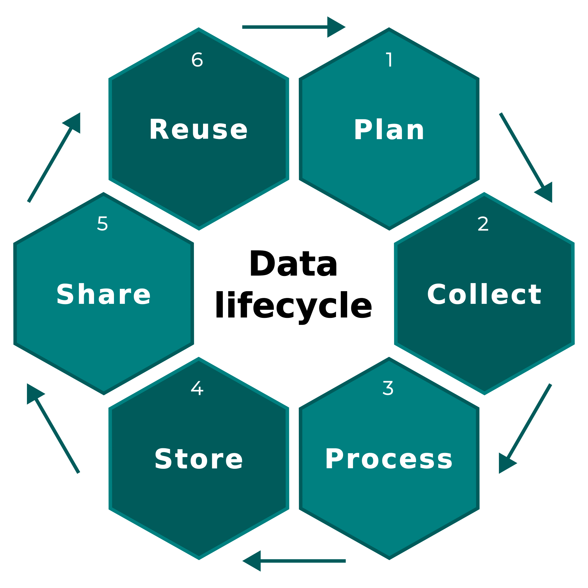

Data lifecycle

Data lifecycle
Table of contents
Table of contents
Raw vs. derived data
Data cleaning
Working w/ taxonomy
Exercise
Raw vs. derived data
Raw data
General recommendations1
- Save and backup the raw data
- Do not modify raw data (even for minor changes)
- Raw data should be in a read-only mode (🔒)
- Any modification produces an output or a derived data
- Write code for data acquisition (when possible)
- Database queries
- API requests
download.file(),wget,curl, etc.
- Describe and document raw data (
README, metadata, etc.)
Raw data
General recommendations1
- Save and backup the raw data
- Do not modify raw data (even for minor changes)
- Raw data should be in a read-only mode (🔒)
- Any modification produces an output or a derived data
- Write code for data acquisition (when possible)
- Database queries
- API requests
download.file(),wget,curl, etc.
- Describe and document raw data (
README, metadata, etc.)
Proposed files organization
.
│
└─ data/
└─ raw-data/
├─ raw-data-1.csv 🔒
├─ ...
└─ README.mdDerived data
General recommendations1
- Modified raw data become a derived data (or an output)
- Record all the steps used to process data (
||) - Create the data you wish to see in the world
- Create analysis-friendly data:
tidydata
Proposed files organization
.
│
└─ data/
└─ raw-data/
├─ raw-data-1.csv 🔒
├─ ...
└─ README.mdDerived data
General recommendations1
- Modified raw data become a derived data (or an output)
- Record all the steps used to process data (
||) - Create the data you wish to see in the world
- Create analysis-friendly data:
tidydata
Proposed files organization
.
│
├─ data/
│ ├─ raw-data/
│ │ ├─ raw-data-1.csv 🔒
│ │ ├─ ...
│ │ └─ README.md
│ │
│ └─ derived-data/
│ ├─ derived-data-1.RData
│ └─ ...
│
└─ code/
├─ process-raw-data-1.R
└─ ...Derived data
General recommendations1
- Modified raw data become a derived data (or an output)
- Record all the steps used to process data (
||) - Create the data you wish to see in the world
- Create analysis-friendly data:
tidydata
Proposed files organization
.
│
├─ data/
│ ├─ raw-data/
│ │ ├─ raw-data-1.csv 🔒
│ │ ├─ ...
│ │ └─ README.md
│ │
│ └─ derived-data/
│ ├─ derived-data-1.RData
│ └─ ...
│
└─ code/
├─ process-raw-data-1.R
└─ ...Alternative
.
│
├─ data/
│ ├─ raw-data-1.csv 🔒
│ ├─ ...
│ └─ README.md
│
├─ outputs/
│ ├─ output-1.RData
│ └─ ...
│
└─ code/
├─ process-raw-data-1.R
└─ ...Data cleaning
Checklist
- Clean column names
- Check decimal point
- Convert date format
- Check category values
- Inspect numeric values
- Check for empty rows/columns
- Check for constant columns
- Check for duplicates
- Missing values
- Select columns
- Filter rows
- Pivot data
- Merge data
- Split/combine columns
- Compute new columns
- Check binomial names
and many more…

Cleaning dirty data
Available at: https://sfirke.github.io/janitor/
| Function | Description |
|---|---|
clean_names() |
Cleans names of a data.frame |
remove_constant() |
Remove constant columns |
remove_empty() |
Remove empty rows and/or columns |
get_dupes() |
Identify column w/ identical value |
single_value() |
Check if a column has only a single value |
janitor example
janitor example
Manipulating data
Available at: https://dplyr.tidyverse.org/
| Function | Description |
|---|---|
arrange() |
Order rows using column values |
filter() |
Keep rows that match a condition |
select() |
Keep or drop columns using their names |
mutate() |
Create, modify, and delete columns |
distinct() |
Keep distinct/unique rows |
slice() |
Subset rows using their positions |
rename() |
Rename columns |
pull() |
Extract a single column |
group_by() |
Group by one or more variables |
summarise() |
Summarise each group down to one row |
Sorting and arranging
R package dplyr is very useful to:
select columns (based on their names only, no
$var/[, "var"]/[["var"]]):dplyr::select(column1, column2)filter rows from those selected columns:
dplyr::filter(column1 == a, column2 > x)group and aggregate rows:
group_by(factor_column)create new columns:
mutate(new_column = old_column * 2)always work with
data.frameortibble
dplyr example
dplyr example
Sepal.Length Sepal.Width Petal.Length Petal.Width Species
1 5.1 3.5 1.4 0.2 setosa
2 4.9 3.0 1.4 0.2 setosa
3 4.7 3.2 1.3 0.2 setosa
4 4.6 3.1 1.5 0.2 setosa
5 5.0 3.6 1.4 0.2 setosa
6 5.4 3.9 1.7 0.4 setosadplyr example
Sepal.Length Sepal.Width Petal.Length Petal.Width Species
1 5.1 3.5 1.4 0.2 setosa
2 4.9 3.0 1.4 0.2 setosa
3 4.7 3.2 1.3 0.2 setosa
4 4.6 3.1 1.5 0.2 setosa
5 5.0 3.6 1.4 0.2 setosa
6 5.4 3.9 1.7 0.4 setosa# A tibble: 32 × 5
# Groups: species [3]
sepal_length sepal_width species mean_length mean_width
<dbl> <dbl> <fct> <dbl> <dbl>
1 4.9 3 setosa 4.76 3.20
2 4.7 3.2 setosa 4.76 3.20
3 4.6 3.1 setosa 4.76 3.20
4 5 3.6 setosa 4.76 3.20
5 4.6 3.4 setosa 4.76 3.20
6 5 3.4 setosa 4.76 3.20
7 4.4 2.9 setosa 4.76 3.20
8 4.9 3.1 setosa 4.76 3.20
9 4.8 3.4 setosa 4.76 3.20
10 4.8 3 setosa 4.76 3.20
# ℹ 22 more rowsMerging data
The family of dplyr::*_join() functions can deal with all types of data.frame merges.
It’s the equivalent to SQL querying (and equivalent to the
merge()function).
Let’s load band_instruments and band_members datasets from dplyr.
Merging data
left_join() keeps all rows in x.
Merging data
left_join() keeps all rows in x.
Merging data
left_join() keeps all rows in x.
Merging data
left_join() keeps all rows in x.
inner_join() only keeps rows from x that have a matching key in y.
dplyr cheatsheet
Pivoting data
Available at: https://tidyr.tidyverse.org/
Wide vs Long format
tidyr::pivot_longer()
Pivot to long format
The function tidyr::pivot_longer() compiles information from multiple columns into a unique column. This is commonly needed to reformat datasets that were optimized for ease of data entry or comparison rather than ease of analysis.
This format is the one privileged by the
ggplot2functions.
# A tibble: 6 × 11
religion `<$10k` `$10-20k` `$20-30k` `$30-40k` `$40-50k` `$50-75k` `$75-100k`
<chr> <dbl> <dbl> <dbl> <dbl> <dbl> <dbl> <dbl>
1 Agnostic 27 34 60 81 76 137 122
2 Atheist 12 27 37 52 35 70 73
3 Buddhist 27 21 30 34 33 58 62
4 Catholic 418 617 732 670 638 1116 949
5 Don’t kn… 15 14 15 11 10 35 21
6 Evangeli… 575 869 1064 982 881 1486 949
# ℹ 3 more variables: `$100-150k` <dbl>, `>150k` <dbl>,
# `Don't know/refused` <dbl>Pivot to long format
The function tidyr::pivot_longer() compiles information from multiple columns into a unique column. This is commonly needed to reformat datasets that were optimized for ease of data entry or comparison rather than ease of analysis.
This format is the one privileged by the
ggplot2functions.
# A tibble: 6 × 11
religion `<$10k` `$10-20k` `$20-30k` `$30-40k` `$40-50k` `$50-75k` `$75-100k`
<chr> <dbl> <dbl> <dbl> <dbl> <dbl> <dbl> <dbl>
1 Agnostic 27 34 60 81 76 137 122
2 Atheist 12 27 37 52 35 70 73
3 Buddhist 27 21 30 34 33 58 62
4 Catholic 418 617 732 670 638 1116 949
5 Don’t kn… 15 14 15 11 10 35 21
6 Evangeli… 575 869 1064 982 881 1486 949
# ℹ 3 more variables: `$100-150k` <dbl>, `>150k` <dbl>,
# `Don't know/refused` <dbl># A tibble: 180 × 3
religion income count
<chr> <chr> <dbl>
1 Agnostic <$10k 27
2 Agnostic $10-20k 34
3 Agnostic $20-30k 60
4 Agnostic $30-40k 81
5 Agnostic $40-50k 76
6 Agnostic $50-75k 137
7 Agnostic $75-100k 122
8 Agnostic $100-150k 109
9 Agnostic >150k 84
10 Agnostic Don't know/refused 96
# ℹ 170 more rowsPivot to wide format
The function tidyr::pivot_wider() is the opposite of tidyr::pivot_longer().
# A tibble: 18 × 11
religion `<$10k` `$10-20k` `$20-30k` `$30-40k` `$40-50k` `$50-75k` `$75-100k`
<chr> <dbl> <dbl> <dbl> <dbl> <dbl> <dbl> <dbl>
1 Agnostic 27 34 60 81 76 137 122
2 Atheist 12 27 37 52 35 70 73
3 Buddhist 27 21 30 34 33 58 62
4 Catholic 418 617 732 670 638 1116 949
5 Don’t k… 15 14 15 11 10 35 21
6 Evangel… 575 869 1064 982 881 1486 949
7 Hindu 1 9 7 9 11 34 47
8 Histori… 228 244 236 238 197 223 131
9 Jehovah… 20 27 24 24 21 30 15
10 Jewish 19 19 25 25 30 95 69
11 Mainlin… 289 495 619 655 651 1107 939
12 Mormon 29 40 48 51 56 112 85
13 Muslim 6 7 9 10 9 23 16
14 Orthodox 13 17 23 32 32 47 38
15 Other C… 9 7 11 13 13 14 18
16 Other F… 20 33 40 46 49 63 46
17 Other W… 5 2 3 4 2 7 3
18 Unaffil… 217 299 374 365 341 528 407
# ℹ 3 more variables: `$100-150k` <dbl>, `>150k` <dbl>,
# `Don't know/refused` <dbl>tidyr cheatsheet
Manipulating strings
The function paste()
The function strsplit()
Manipulating strings
Available at: https://stringr.tidyverse.org/
| Function | Description |
|---|---|
str_detect() |
Detect the presence/absence of a pattern |
str_extract() |
Extract the first match from each string |
str_extract_all() |
Extract all match from each string |
str_replace() |
Replace the first match by a text |
str_replace_all() |
Replace all matches by a text |
str_remove() |
Remove the first match |
str_remove_all() |
Remove all matches |
str_split() |
Split up a string into pieces |
str_to_upper() |
Convert a string to upper case |
str_to_lower() |
Convert a string to lower case |
Manipulating strings
The stringr package uses a standardized set of functions applied to strings
Detect pattern1
Manipulating strings
The stringr package uses a standardized set of functions applied to strings
Subset matches
Manipulating strings
The stringr package uses a standardized set of functions applied to strings
Replace pattern
str_replace()1 replaces first occurrence
Manipulating strings
The stringr package uses a standardized set of functions applied to strings
Character case
str_to_upper()1 converts to upper case
And many more…
The wonderful world of regex
How can we specify generic patterns?
Regular expressions, or regex: a concise language for describing patterns in strings. More here.
The wonderful world of regex
How can we specify generic patterns?
Regular expressions, or regex: a concise language for describing patterns in strings. More here.
Examples
The wonderful world of regex
How can we specify generic patterns?
Regular expressions, or regex: a concise language for describing patterns in strings. More here.
Examples
[[1]]
[1] "M" "y" "e" "m" "a" "i" "l" "i" "s" "c" "a" "m" "i" "l" "l" "e" "g" "m" "a"
[20] "i" "l" "c" "o" "m"The wonderful world of regex
How can we specify generic patterns?
Regular expressions, or regex: a concise language for describing patterns in strings. More here.
Examples
stringr cheatsheet
Working w/ dates
Available at: https://lubridate.tidyverse.org/
| Function | Description |
|---|---|
ymd(), ydm(), etc. |
Parse dates with year, month, and day |
ms(), hm(), hms() |
Parse periods |
ymd_hms(), dmy_hm() |
Parse date-times |
year() |
Get years component of a date-time |
month() |
Get months component of a date-time |
hour() |
Get hours component of a date-time |
week() |
Get weeks component of a date-time |
now() |
Get current day and time |
Working w/ dates
Working w/ dates
Parsing date
[1] "2011-06-04" "2011-06-04" "2011-06-04" "2011-06-04"Parsing date-times
Working w/ dates
Parsing date
[1] "2011-06-04" "2011-06-04" "2011-06-04" "2011-06-04"Parsing date-times
lubridate cheatsheet
Working w/ taxonomy
The Eternal problem of taxonomy
- Species names regularly change (genetics)
- Species names can be different between countries
- Species names can have different synonyms
Many taxonomic data sources available
Taxonomic data sources
Most of these taxonomic databases provide an API
Most of these API provide an package 🎉
rgbif example
Dedicated vignette on Working with taxonomic names
rgbif example
Accepted name
| usageKey | scientificName | canonicalName | rank | status | confidence | matchType | kingdom | phylum | order | family | genus | species | kingdomKey | phylumKey | orderKey | familyKey | genusKey | speciesKey | verbatim_name |
|---|---|---|---|---|---|---|---|---|---|---|---|---|---|---|---|---|---|---|---|
| 5209244 | Acanthurus lineatus (Linnaeus, 1758) | Acanthurus lineatus | SPECIES | ACCEPTED | 99 | EXACT | Animalia | Chordata | Perciformes | Acanthuridae | Acanthurus | Acanthurus lineatus | 1 | 44 | 587 | 4233 | 2379647 | 5209244 | Acanthurus lineatus |
Synonym name
| usageKey | acceptedUsageKey | scientificName | canonicalName | rank | status | confidence | matchType | kingdom | phylum | order | family | genus | species | kingdomKey | phylumKey | orderKey | familyKey | genusKey | speciesKey | verbatim_name |
|---|---|---|---|---|---|---|---|---|---|---|---|---|---|---|---|---|---|---|---|---|
| 5209245 | 5209244 | Ctenodon lineatus (Linnaeus, 1758) | Ctenodon lineatus | SPECIES | SYNONYM | 98 | EXACT | Animalia | Chordata | Perciformes | Acanthuridae | Acanthurus | Acanthurus lineatus | 1 | 44 | 587 | 4233 | 2379647 | 5209244 | Ctenodon lineatus |
worrms example
worrms example
Accepted name
| AphiaID | url | scientificname | authority | status | unacceptreason | taxonRankID | rank | valid_AphiaID | valid_name | valid_authority | parentNameUsageID | kingdom | phylum | class | order | family | genus | citation | lsid | isMarine | isBrackish | isFreshwater | isTerrestrial | isExtinct | match_type | modified |
|---|---|---|---|---|---|---|---|---|---|---|---|---|---|---|---|---|---|---|---|---|---|---|---|---|---|---|
| 159582 | https://www.marinespecies.org/aphia.php?p=taxdetails&id=159582 | Acanthurus lineatus | (Linnaeus, 1758) | accepted | NA | 220 | Species | 159582 | Acanthurus lineatus | (Linnaeus, 1758) | 125908 | Animalia | Chordata | Teleostei | Acanthuriformes | Acanthuridae | Acanthurus | Froese, R. and D. Pauly. Editors. (2025). FishBase. Acanthurus lineatus (Linnaeus, 1758). Accessed through: World Register of Marine Species at: https://www.marinespecies.org/aphia.php?p=taxdetails&id=159582 on 2025-11-02 | urn:lsid:marinespecies.org:taxname:159582 | 1 | 0 | 0 | 0 | NA | like | 2008-01-15T17:27:08.177Z |
Synonym name
| AphiaID | url | scientificname | authority | status | unacceptreason | taxonRankID | rank | valid_AphiaID | valid_name | valid_authority | parentNameUsageID | kingdom | phylum | class | order | family | genus | citation | lsid | isMarine | isBrackish | isFreshwater | isTerrestrial | isExtinct | match_type | modified |
|---|---|---|---|---|---|---|---|---|---|---|---|---|---|---|---|---|---|---|---|---|---|---|---|---|---|---|
| 317534 | https://www.marinespecies.org/aphia.php?p=taxdetails&id=317534 | Ctenodon lineatus | (Linnaeus, 1758) | unaccepted | NA | 220 | Species | 159582 | Acanthurus lineatus | (Linnaeus, 1758) | 296440 | Animalia | Chordata | Teleostei | Acanthuriformes | Acanthuridae | Ctenodon | Froese, R. and D. Pauly. Editors. (2025). FishBase. Ctenodon lineatus (Linnaeus, 1758). Accessed through: World Register of Marine Species at: https://www.marinespecies.org/aphia.php?p=taxdetails&id=317534 on 2025-11-02 | urn:lsid:marinespecies.org:taxname:317534 | 1 | 0 | 0 | 0 | NA | like | 2008-02-28T13:41:07.550Z |
worrms example
Classification
| AphiaID | rank | scientificname |
|---|---|---|
| 2 | Kingdom | Animalia |
| 1821 | Phylum | Chordata |
| 146419 | Subphylum | Vertebrata |
| 1828 | Infraphylum | Gnathostomata |
| 152352 | Parvphylum | Osteichthyes |
| 10194 | Gigaclass | Actinopterygii |
| 843664 | Superclass | Actinopteri |
| 293496 | Class | Teleostei |
| 1517548 | Order | Acanthuriformes |
| 125515 | Family | Acanthuridae |
| 125908 | Genus | Acanthurus |
| 159582 | Species | Acanthurus lineatus |
rotl example
rotl example
Accepted name
| search_string | unique_name | approximate_match | score | ott_id | is_synonym | flags | number_matches |
|---|---|---|---|---|---|---|---|
| acanthurus lineatus | Acanthurus lineatus | FALSE | 1 | 93141 | FALSE | 1 |
An unified pipeline
## Species to look for ----
species <- "Ctenodon lineatus"
## Check name in GBIF database ----
gbif <- rgbif::name_backbone(species) |>
dplyr::select(species, acceptedUsageKey) |>
dplyr::rename(gbif_acc_name = species,
gbif_acc_id = acceptedUsageKey)
## Check name in WORMS database ----
worms <- worrms::wm_records_name(species) |>
dplyr::select(valid_name, valid_AphiaID) |>
dplyr::rename(worms_acc_name = valid_name,
worms_acc_id = valid_AphiaID)
## Check name in OTL database ----
otl <- rotl::tnrs_match_names(species) |>
dplyr::select(unique_name, ott_id) |>
dplyr::rename(otl_acc_name = unique_name,
otl_acc_id = ott_id)
## Append results ----
data.frame("original_name" = species, gbif, worms, otl)| original_name | gbif_acc_name | gbif_acc_id | worms_acc_name | worms_acc_id | otl_acc_name | otl_acc_id |
|---|---|---|---|---|---|---|
| Ctenodon lineatus | Acanthurus lineatus | 5209244 | Acanthurus lineatus | 159582 | Acanthurus lineatus | 93141 |
See also
Available at: https://docs.ropensci.org/taxize/
Exercise (20 min)
Cleaning data
Part 1 - Clean the PanTHERIA database from the previous exercise
- use the function
readr::read_delim()to import data - select columns
MSW05_Binomial,5-1_AdultBodyMass_g,8-1_AdultForearmLen_mm&3-1_AgeatFirstBirth_d - rename columns in
pan_binomial_name,pan_adult_body_mass_g,pan_adult_forearm_len_mm&pan_age_at_first_birth_d - replace
-999byNA
Part 2 - Create a reference table from GBIF occurrences downloaded previously
- remove all columns except
scientificName - remove duplicated rows
- clean binomial names (remove authors)
Part 3 - Merge this table with PanTHERIA (cleaned) to add trait values to these two species
Correction
Part 1
library(dplyr)
## Open PanTHERIA data ----
pantheria <- readr::read_delim("PanTHERIA_1-0_WR05_Aug2008.txt")
## Clean PanTHERIA data ----
pantheria <- pantheria |>
select(`MSW05_Binomial`,
`5-1_AdultBodyMass_g`,
`8-1_AdultForearmLen_mm`,
`3-1_AgeatFirstBirth_d`) |>
rename(binomial_name = `MSW05_Binomial`,
pan_adult_body_mass_g = `5-1_AdultBodyMass_g`,
pan_adult_forearm_len_mm = `8-1_AdultForearmLen_mm`,
pan_age_at_first_birth_d = `3-1_AgeatFirstBirth_d`) |>
mutate(across(starts_with("pan_"), ~ ifelse(.x == -999, NA, .x)))Part 2
## Open GBIF occurrences ----
gbif_occ <- read.csv("gbif_occurrences.csv")
## Extract & clean species names ----
gbif_species <- gbif_occ |>
select(scientificName) |>
distinct() |>
mutate(scientificName = stringr::str_extract(scientificName,
"^[A-z]+\\s[a-z]+")) |>
rename(binomial_name = scientificName)Part 3